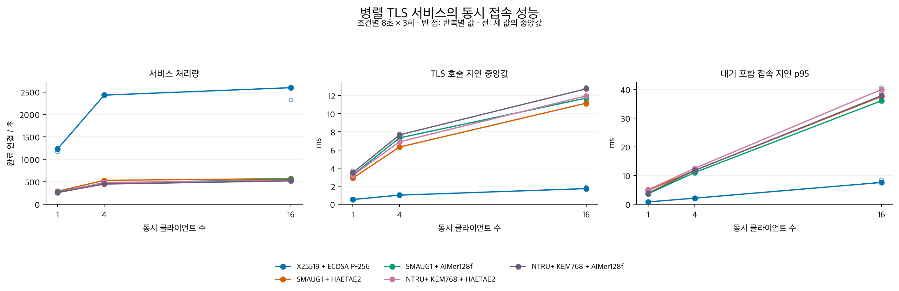

KPQC TLS: 네트워크 조건과 동시 부하
Network sensitivity and deployment under load
1. MTU · Network delay

MTU (Maximum Transmission Unit) 1500 / 9001. Added round-trip delay: 0 / 10 / 30 ms. Points show block medians; lines show their median.
SVG
2. HRR (HelloRetryRequest)

Same final KPQC group and signature; zero or one observed HRR. MTU 1500.
SVG
3. Concurrent TLS connections

1 / 4 / 16 client processes; eight server workers. Three eight-second load windows per condition.
SVG
4. Deployment under load

Four concurrent clients. Service identity is determined from the observed peer certificate. Mixed-KEM candidate rejected; compliant candidate promoted.
SVG
Architecture
 SVG
SVG